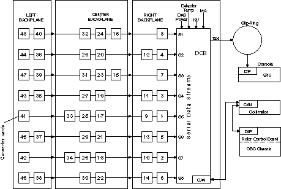
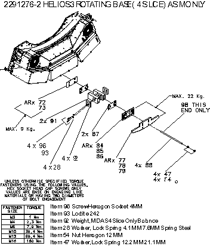

Operating Documentation
Direction 5114043-800, Rev# 9
LightSpeed 3.X Service Methods (Advanced)
Operating Documentation |
The Lightspeed Ultra system is capable of operating 1 of 2 possible modes: 4 slice or 8 slice per rotation, data collections. This presents many differences in Patient Applications capabilities. Please refer to the Customer Technical Reference manuals for details on Protocols, Acquisition modes, Cradle Pitch etc.
The MDAS Theory and Warp3 Detector Theory procedures describe an 8 slice configuration system. The functions of the DCB, Converters, DHCB, DMB and Detector are the same in both configurations. The set points, impedances and specifications are also the same for both configurations.
From a hardware perspective the main difference is in the MDAS. The 4 slice configuration uses a depopulated MDAS. This means that all EVEN slots are empty. Only ODD numbered slots contain converter boards. Data collection is still performed in the same manner using only the odd converter card slot assignments (see Illustration 1).
Illustration 1: Data Flow (Serial Data Stream)

Since the even converter slots are empty, to maintain signal integrity, rows 3 and 4 of the detector FET matrix are grounded under DCB control (see Illustration 2).
Illustration 2: MDAS FET Array Arrangement (only one side is shown)

As the detector FET enable lines employed are different in the 4 slice mode versus the 8 slice mode, this results in only 4 macro row capability, 2A, 1A, 1B, 2B. Reference Illustration 3 for FET mode and macro row comparisons.
| NOTE: | For a full size version of this illustration, click on the pdf icon below. |
Media File 1: Full Size Illustration: 4 Slice versus 8 Slice FET Mode Assignments

Illustration 3: 4 Slice versus 8 Slice FET Mode Assignments

These configuration differences require that a unique full Detailed Calibration be performed for 4 slice versus 8 slice mode operations. This is necessary since different macro cell combinations are used. There are less calibration stations in the 4 slice configuration.
It is strongly recommended that the system is not downgraded from 8 slice to 4 slice modes as a troubleshooting tool. Faulty converter cards in EVEN slots can cause other failures in the MDAS.
4 slice troubleshooting tools do not use EVEN converter card slots. This attempt will cause confusion and additional work. MDAS troubleshooting is designed to operate with either 4 slice or 8 slice configurations exclusively, not inclusively.
| NOTE: | 8 Slice system operation is a purchasable option. This requires a serialized licensed Options MOD and software reconfiguration to enable this feature. Please contact your local GE Sales Representative for pricing and sales information. |
An additional hardware difference is related to gantry balance. Since the 4 slice MDAS configuration contains only 24 converter cards, additional weight has been added at the factory. These weights are located above the center DAS chassis. There are 4 individual weights mounted on the aluminum spacer tubing. These weights have 4 slice stamped onto them. These weights are used only in the 4 slice configuration.
Illustration 4: 4 Slice Balance Weights Location
